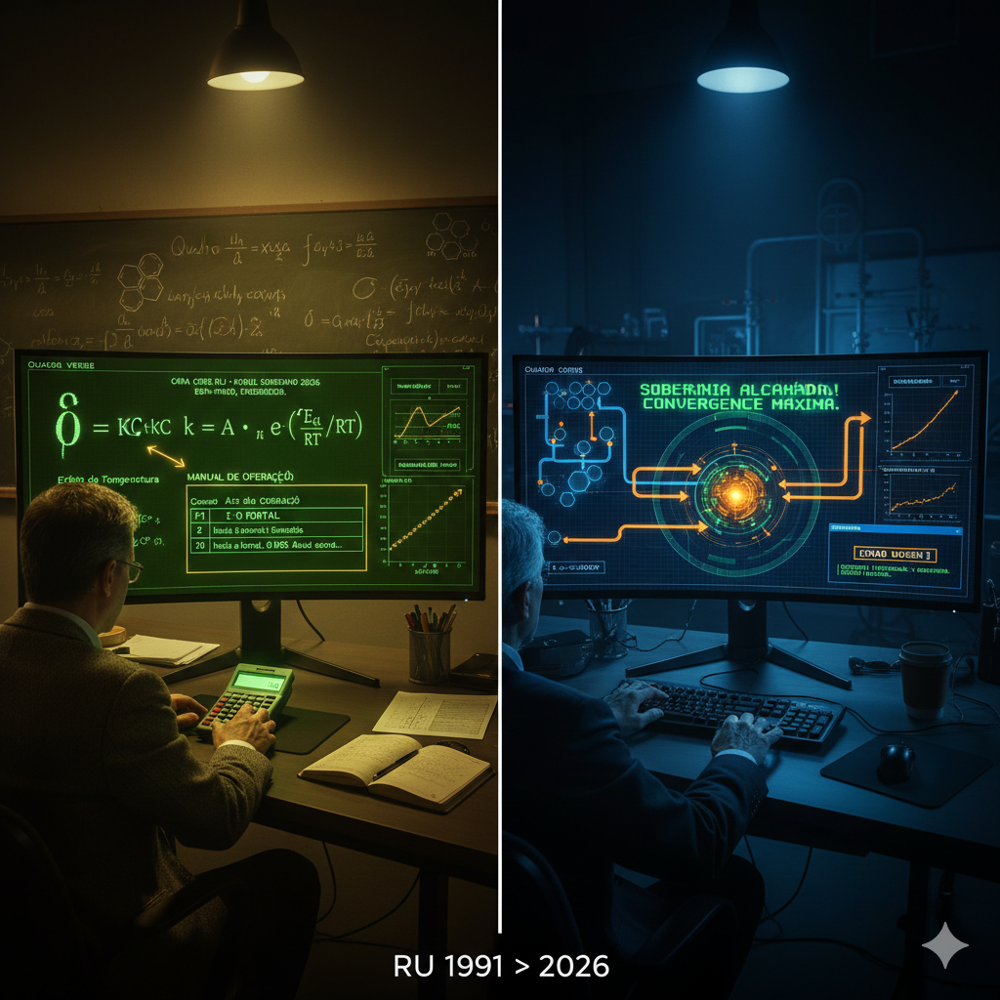

ATO I — O Portal
Série RU 1991: A Essência da Soberania
O Redescobrimento do Kernel de 1991
Em 1991, o console MS-DOS era o território frio: cursor piscando em verde âmbar, comandos em modo texto, nenhum atalho além do teclado. Na UFPR, naquele mesmo ano, o calor vinha de outro lugar — o da sala de aula, do quadro negro e do primeiro balanço de massa. A equação não fechava no papel; fechava na cabeça. O rigor era o mesmo que hoje preside o acesso aos dados: sem identidade da máquina, não há portal.
Trinta e cinco anos depois, o kernel daquele tempo foi reencontrado. Não como relíquia de museu, mas como base de um sistema em que a soberania técnica começa na porta de entrada. Quem acessa o RU Soberano não entra com um clique genérico; entra com o código de identidade da máquina. Balanço de massa, isotermas de Langmuir e constantes cinéticas não são apêndice — são a linguagem em que a narrativa foi escrita desde o primeiro ato.
O contraste permanece deliberado: o frio do terminal que exige disciplina; o calor do aprendizado que exige entrega. O portal que hoje desbloqueia o Ato I é o mesmo que exige que você se identifique. Porque a segurança da soberania não começa no meio do caminho. Começa aqui.
Legenda sugerida para LinkedIn (imagem Split 1991>2026)
Use na publicação que acompanha a imagem serie_ru_chamada.png para converter seguidores em leitores do primeiro artigo:
1991: balanço de massa no quadro negro da UFPR. 2026: o mesmo rigor no código. O portal não abre com um clique — abre com o identificador da máquina. Langmuir, constantes cinéticas e a essência da soberania técnica. Primeiro artigo da série no link da bio. 🔗
Do MS-DOS ao dashboard: o kernel de 1991 foi reencontrado. Ato I desbloqueado. A soberania começa no portal — e no link abaixo.
Hashtags
Navegação da série (binge-reading)
Chamada · Ep.01 — Ato II · Ep.02 — Ato III · Ep.03 — Ato IV · Ep.04 — Ato V · Epílogo
Contato
- E-mail: suporte@caracore.com.br
- Site: www.caracore.com.br
- LinkedIn: Cara Core Informática
Artigo publicado em 22 de fevereiro de 2026
© 2026 Cara Core Informática. Todos os direitos reservados.